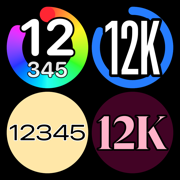

Today's steps on your Apple Watch face — in a look you choose yourself
How often does the number update?
About every 15 minutes — that is a limit of watchOS for complications. While the Stepskin app is open on your watch, and right after you close it, the number is live.
Where do the steps come from?
From Health on your Apple Watch (steps counted by the watch and your iPhone), plus the watch's own step counter for the minutes since the last Health entry. Nothing is sent anywhere.
Why are my steps different from the Activity app?
Activity shows the watch's own count. Stepskin adds the steps your iPhone counted while the watch was off your wrist, so it matches the Health app.
Does it need an internet connection?
No. Stepskin never connects to the internet. There are no ads and no in-app purchases.
Does it drain the battery?
No. Stepskin does not keep a workout running and does not read your location. It wakes up briefly, reads the step count and goes back to sleep.
Questions, bugs or ideas: zzzjjj080@gmail.com
今日の歩数を、Apple Watch の文字盤に大きな数字で出すアプリです。小さい丸と大きい横長の2つがあり、それぞれ別の見た目を持てます。数字の出し方（2行／12K／1行）、色、書体、縁取り、メーターの有無などを選べます。「ランダム」で引いて、気に入ったものを ☆ で貯め、1時間ごと・1日ごとに順ぐりに着せ替えることもできます。
置き方：Apple Watch で Stepskin を一度開き、歩数とヘルスケアの読み取りを許可してください。そのあと文字盤を長押し →「編集」→ 小さい枠に「いまの歩数」を置きます。
更新：文字盤は約15分ごとに新しくなります（watchOS の決まり）。アプリを開いている間と閉じた直後は、いまの数字になります。
お問い合わせ：zzzjjj080@gmail.com